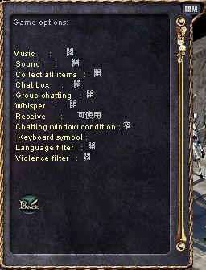
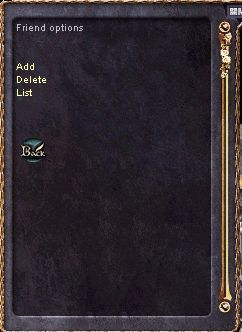
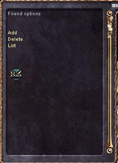

|
2001年8月28日
Lineage單拖逃命往龍谷7/F Video

http://www.hklineage.com/hkdv7fa.rm
(請安裝Real
Player)
Lineage單拖餵地龍Video

http://www.hklineage.com/hkdv7fb.rm
(請安裝Real
Player)
注：網主已經將之前在7/F 30分鐘找地龍和之後20分鐘和地龍玩捉迷藏的片段刪去，但這段Video仍是非常悶的．．．
新介面更進消息
如果大家有更新了新介面，可能發覺右下角由右數起第二個按鈕好像沒用，其實大家只要將語系轉做英文，就會發現那個其實是"Option"選項，大家可以不用打指令去調較遊戲中的設定。有關詳情見下圖：

 
另外昨天所提及的好友名單，官方正式的譯名為朋友目錄，而那個昨天所說的好友名單按鈕應為"團體選項"(Community
Options)，除了可以控制朋友目錄外，亦可以看血盟及組隊的資料，見下圖：
  

|